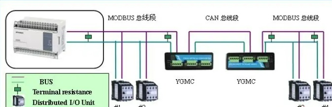

=======☆☆☆☆☆☆=======
这里是常用的通信协议程序。 CAN,CANopen， Modbus,485，232，串口，ethercat， TCP/IP，UDP，HTTP， SSL，MQTT，104规约，Zigbee,等等
=======☆☆☆☆☆☆=======
CubeMX Can通信的配置-上位机下位机都OK
=======☆☆☆☆☆☆=======
CubeMX CAN-STM32开发板和windows上位机通信
=======☆☆☆☆☆☆=======
CubeMX Can-BaudRate计算
=====☆☆☆☆☆=====
Modbus协议调试过程和调试工具,Modbus协议仿真调试
=====☆☆☆☆☆=====
CANable1
Modbus协议测试工具
=====================================

=====================================
© All rights reservedDesign: 825772667@qq.com